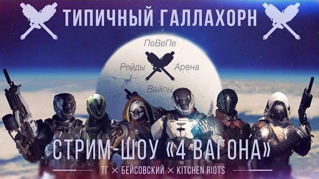

стрим шоу «4 вагона»
Запись с первого и долгожданного стрима команды Типичного Галлахорна с приглашенными гостями. Веселье, вайпы, живое общение со зрителями и задушевные беседы в чате, а также 2 рейда сразу. Это и многое другое в пилотном выпуске стрим-шоу «4 Вагона». Сегодня с нами специальные гости: Денис Бейсовский и редакторы Kitchen Riots. Оставайтесь с нами и следите за расписанием трансляций.
подкаст выпуск 11
В этом выпуске:
– #ТГнаучный ч.2
– Новые производители оружия.
– Очередная драма за предзаказ.
– «Суши и Роллы» для снайперок.
– Рубрика «Сельское Верование».
– Традиционный «Экзотик Недели».